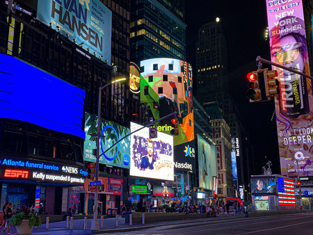

ines (35 sloc)  1.11 KB
  
<!DOCTYPE html>
<html lang="es" dir="ltr">
  <head>
    <meta charset="utf-8">
    <title>Práctica 4</title>
    <link rel="stylesheet" href="style.css">
    <script src="p4.js"></script>
  </head>
  <h1>Práctica 4</h1>
  <body onload="main();">
    <div class="ventana">
      
      <h2>ORIGINAL</h2>
      <canvas id="display"></canvas>
      <h2>MANIPULADA</h2>
    </div>
    <div class="control">
      <button type="button" id="botonoriginal">original</button>
      <button type="button" id="boton1">gris</button>
      <button type="button" id="mirror">mirror</button>
      <br>
      <span class="color">Red:  </span>
      <input type="range" id="deslizadorR" min="0" max="255" value="255"/>
      <span id="range_valueR">255</span>
      <br>
      <span class="color">Green: </span>
      <input type="range" id="deslizadorG" min="0" max="255" value="255"/>
      <span id="range_valueG">255</span>
      <br>
      <span class="color">Blue:  </span>
      <input type="range" id="deslizadorB" min="0" max="255" value="255"/>
      <span id="range_valueB">255</span>
    </div>
  </body>
</html>